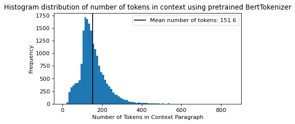

Exploring SQuAD2.0
Contents
Exploring SQuAD2.0#
Library Imports#
import numpy as np
import pandas as pd
from pandas import option_context
from termcolor import colored
import string
The dataset was introduced by [RJL18], the NLP group at Stanford.
Loading in the dataset#
Training Set Dataset download: https://rajpurkar.github.io/SQuAD-explorer/dataset/train-v2.0.json
# Path to local file
df = pd.read_json('../../squad2dataset/train-v2.0.json')
with option_context('display.max_colwidth', 125):
display(df.head())
| version | data | |
|---|---|---|
| 0 | v2.0 | {'title': 'Beyoncé', 'paragraphs': [{'qas': [{'question': 'When did Beyonce start becoming popular?', 'id': '56be85543aea... |
| 1 | v2.0 | {'title': 'Frédéric_Chopin', 'paragraphs': [{'qas': [{'question': "What was Frédéric's nationalities?", 'id': '56cbd2356d... |
| 2 | v2.0 | {'title': 'Sino-Tibetan_relations_during_the_Ming_dynasty', 'paragraphs': [{'qas': [{'question': 'Who were Wang Jiawei an... |
| 3 | v2.0 | {'title': 'IPod', 'paragraphs': [{'qas': [{'question': 'Which company produces the iPod?', 'id': '56cc55856d243a140015ef0... |
| 4 | v2.0 | {'title': 'The_Legend_of_Zelda:_Twilight_Princess', 'paragraphs': [{'qas': [{'question': 'What category of game is Legend... |
topic_titles = []
for topic in df["data"]:
topic_titles.append(topic["title"])
print(np.random.choice(topic_titles, size=5))
['Genocide' 'Protestantism' 'Baptists' 'East_India_Company' 'Infrared']
# Create a list of all the contexts in the dataset
context_list = []
context_count = 0
for topic in range(len(df)):
topic_data = df.iloc[topic]["data"]
for context_paragraph in range(len(topic_data["paragraphs"])):
context_count += 1
context_list.append(topic_data["paragraphs"][context_paragraph]["context"])
# print(df.iloc[topic]["data"]["paragraphs"])
print("Total number of Contexts:", context_count)
Total number of Contexts: 19035
from transformers import BertTokenizer
tokenizer = BertTokenizer.from_pretrained("bert-base-uncased")
tokenized_context_length = []
for context in context_list:
tokenized_context_length.append(len(tokenizer.tokenize(context)))
print("Mean tokenized context length: ", np.mean(tokenized_context_length))
Mean tokenized context length: 151.62348305752562
from matplotlib import pyplot as plt
from matplotlib.pyplot import figure
figure(figsize=(6, 3), dpi=80)
plt.hist(tokenized_context_length, bins=[10*i for i in range(87)])
plt.title("Histogram distribution of number of tokens in context using pretrained BertTokenizer")
plt.xlabel('Number of Tokens in Context Paragraph')
plt.ylabel('Frequency')
mean_tc = np.mean(tokenized_context_length)
min_tc = np.min(tokenized_context_length)
max_tc = np.max(tokenized_context_length)
plt.axvline(x = mean_tc, color = 'black', label = f'Mean number of tokens: {np.round(mean_tc, decimals=1)}')
plt.legend()
plt.show()
print("Minimum number of tokens in Context paragraph:", min_tc)
print("Maximum number of tokens in Context paragraph:", max_tc)

Minimum number of tokens in Context paragraph: 25
Maximum number of tokens in Context paragraph: 853